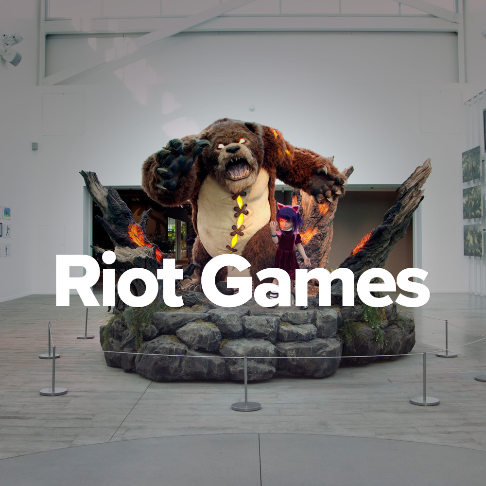

Nuestra Historia
Fundada en 2006 en Los Ángeles por Brandon Beck y Marc Merrill, Riot Games saltó a la fama con el lanzamiento de League of Legends en 2009, un juego que revolucionó el modelo free‑to‑play y se convirtió en uno de los eSports más grandes del mundo.

Misión
Crear experiencias globales únicas que conecten a millones de personas, ofreciendo entretenimiento de alta calidad y valor para la comunidad gamer.
Visión
Ser referente en innovación, esports y entretenimiento, centrados en el jugador y apoyados por una cultura inclusiva, sostenible y responsable.
Datos Clave
- Empleados: aprox. 4 100 en 17 oficinas globales, con presencia en Los Ángeles, Dublín, Berlín, Singapur, entre otras :contentReference.
- Ingresos 2023: 1 500 millones USD, con un valor estimado de la compañía de unos 21 000 millones USD.
- Proyectos en curso: VALORANT, Wild Rift, TFT, Arcane, y el nuevo proyecto “Project K” —un juego de cartas físico ambientado en el universo de LoL, con lanzamiento regional a inicios de 2025.
- Reestructuración 2024: en enero se recortaron 530 puestos (≈11 % de la plantilla) para enfocarse en títulos principales.
